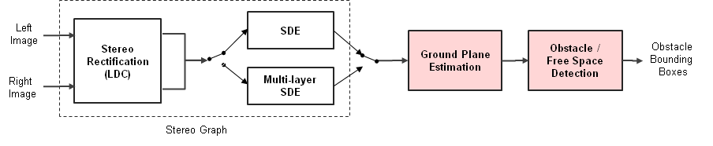
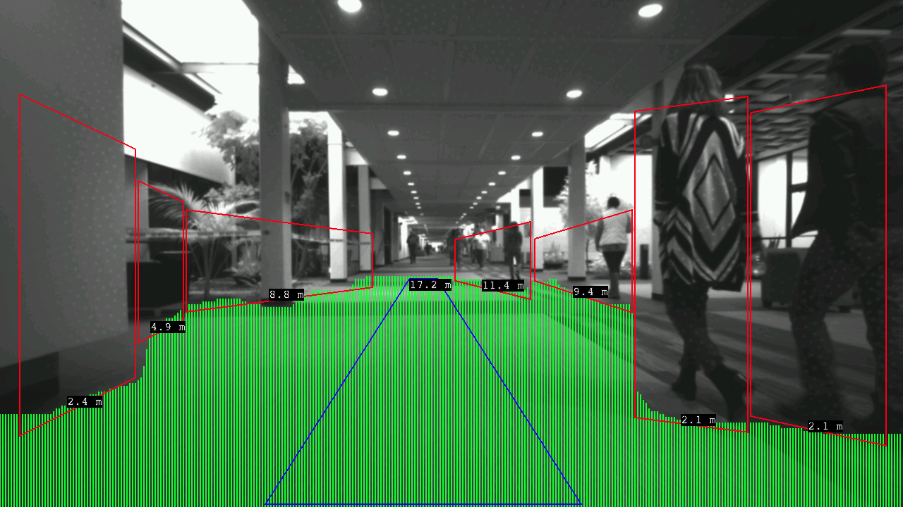

|
Vision Apps User Guide
|


|
|
Vision Apps User Guide
|
|
This application demonstrates obstacle / freespace detection solely using a disparity map from J7 SDE (Stereo Depth Engine) HWA. The disparity map can be created using either a single-layer SDE or a multil-layer SDE refinement with post-processing depending on configuration. This application estimates ground plane first from disparity map. After that, it detects obstacles and freespaces. For obstacles detected, the distances to obstacles are also computed. For freespace detected, the maximum drivable distance in front of vehicle is computed as well.
The application makes use of the below application libraries,
| Platform | Linux x86_64 | Linux+RTOS mode | QNX+RTOS mode | SoC |
|---|---|---|---|---|
| Support | N0 | YES | NO | J721e |
Shown below is the overall application data flow example output.

Application data flow |
Shown below is the example output.

Obstacle / Free Space Detection Output |
 1.8.15
1.8.15